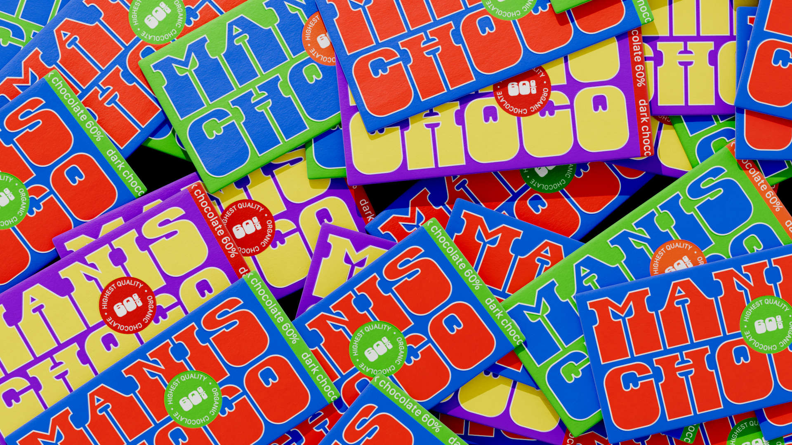
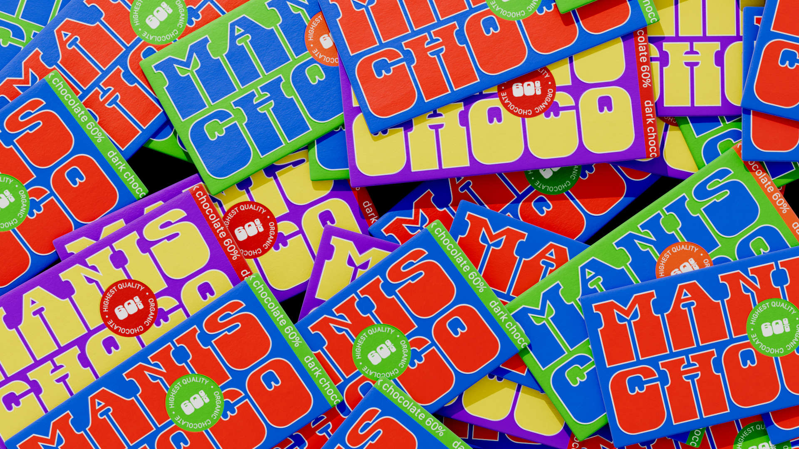

Danfo is an ELSH axis variable font with three main styles at 0,50, and 100. Danfo covers all of the Google SSA character set. The three styles reflect different cut-out shapes inspired by the vinyl cut-out lettering of the public transportation buses in Lagos, Nigeria.
To contribute, please see github.com/Afrotype/danfo.
 
